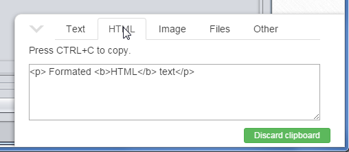

Filesystem
Swing application running inside Webswing are ultimately using filesystem of server where Webswing is running. This cause problems to applications that consume or generate files and interact with file system.
Webswing solves this problem by providing an automatic JFileChooser integration dialog, which offers users ability to interact with server's file system by uploading, downloading and deleting files from browser.

Permissions
It is possible to disable upload, download or deleting of files in in Security tab of application settings in Admin console.
Isolated filesystem
If the users are not supposed to have access to full servers filesystem, Webswing offers option to limit the access to isolated folder which they are allowed to interact with. This setting isolatedFs can be set in Security tab of application settings in Admin console. If it is enabled, user will only see folder "upload" in homeDir folder.

Printing
Webswing implements seamless printing support, which works out of the box without any change needed in your application.
Webswing generates a pdf from the printed document and opens it in new browser tab using PDF.js viewer.
Printing integration chandles printing using:
- Toolkit.getDefaultToolkit().getPrintJob() method
- PrinterJob.getPrinterJob()
- multi paged documents
- landscape and portrait orientation
Printing is demonstrated in SwingSet3 demo with sample source codes included.

Clipboard
Webswing has a built-in clipboard integration. Due to various browser security limitations some clipboard operations are limited at the moment.
Copy
When user triggers copy operation from swing application by pressing ctrl+c or in menu option, webswing analyzes the data written to clipboard and notifies the client what type of data is available in clipboard by small dialog.
Webswing recognizes 5 basic types.
- Plain text
- HTML 
- Image

- Files

- Other (ie. application specific types)
This dialog only informs the user that data is available in swing clipboard. To copy the Plain text or HTML type to local clipboard user has to press ctrl+c again while the dialog is visible. For copying the image user has to use the browser default behavior to copy the image to local clipboard.
If the swing clipboard contains files and allowDownload option is enabled, user will be presented with list links allowing to download those files from Swing application.
Note:
isolatedFsoption does not apply here. Access is not limited to files in isolated folder.
Paste
Paste operation can be triggered by ctrl+v keyboard shortcut. But here it gets a little tricky, because we have our swing clipboard data sitting on the server and we have a local browser clipboard data. So we need to decide which one to use for the paste operation.
Solution is simple. If the clipboard dialog is open we use the Swing clipboard, because we know user has just coppied some data there. If the clipboard is not visible, we try to get the data from local browser clipboard.

Note: if paste operation is trigered from context menu, it will always use the swing clipboard data.
Pasting from swing clipboard All types are accessible to application if pasting from swing clipboard.
Pasting from local browser clipboard See the following matrix for supported types based on browser.
| Browser | Supported content types |
|---|---|
| Chrome | Plain text, HTML, Images |
| Firefox | Plain text, HTML |
| IE | Plain text, HTML |
java.awt.Desktop
The AWT framework Desktop class is the default interface for triggering OS specific operations like edit file or open link. Webswing implements this interface and interprets these commands in web browser friendly way.
| Method | Webswing operation |
|---|---|
| browse | Opens the specified link in new tab |
| edit | Referenced file is downloaded |
| Opens a new email window in default mail client | |
| open | Referenced file is downloaded |
| Referenced file is downloaded |